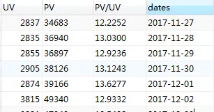

淘宝用户行为分析
理解数据
UserBehavior是阿里巴巴提供的一个淘宝用户行为数据集，数据集包含了2017年11月25日至2017年12月3日之间，有行为的约一百万随机用户的所有行为（行为包括点击、购买、加购、喜欢）。（数据来源：https://tianchi.aliyun.com/dataset/dataDetail?dataId=649）
| 列名称 | 说明 |
|---|---|
| 用户ID | 整数类型，序列化后的用户ID |
| 商品ID | 整数类型，序列化后的商品ID |
| 商品类目ID | 整数类型，序列化后的商品所属类目ID |
| 行为类型 | 字符串，枚举类型，包括('pv', 'buy', 'cart', 'fav') |
| 时间戳 | 行为发生的时间戳 |
其中行为类型下对应行为为:
| 行为类型 | 说明 |
|---|---|
| pv | 商品详情页pv，等价于点击 |
| buy | 商品购买 |
| cart | 将商品加入购物车 |
| fav | 收藏商品 |
总计100,150,807条数据集，本文截取397118条数据作为数据集进行分析。
提出问题
AARRR模型
采用AARRR漏斗模型拆解用户进入APP后的每一步行为。AARRR模型是根据用户使用产品全流程的不同阶段进行划分的，针对每一环节的用户流失情况分析出不同环节的优化优先级，主要通过以下个各阶段来进行分析：

各阶段主要包括的指标有：
- 用户获取
- 渠道到达量（曝光率）
- 渠道转化率
- 渠道ROI，投资回报率，利润/投资
（日应用下载量，日新增用户数，获客成本，一次会话用户数占比）
- 用户活跃
- 活跃用户占比
- 用户会话session次数
- 用户访问时长
- 用户平均访问次数
- 用户留存
- 次日/7日留存率
- 营收
- 付费用户数
- 付费用户占比
- ARPU：某段时间内每位用户平均收入
- 客单价：销售总额/顾客总数（没有时间维度）
- LTV：用户生命周期价值
- LTV=ARPU*1/流失率
- 传播
- k因子：每个用户带来几个新用户
- 用户分享率
- 活动/邀请曝光量
RFM模型

RFM模型是衡量客户价值和客户创利能力的重要工具和手段。模型通过一个客户的近期购买行为、购买的总体频率以及花了多少钱3项指标来描述该客户的价值状况。
- 最近一次消费 (Recency)
- 消费频率 (Frequency)
- 消费金额 (Monetary)
根据三个维度指标数据，建立度量机制可将用户数据组合得到价值客户的体系。
- 重要价值客户（111）：最近消费时间近、消费频次和消费金额都很高，必须是VIP啊！
- 重要保持客户（011）：最近消费时间较远，但消费频次和金额都很高，说明这是个一段时间没来的忠诚客户，我们需要主动和他保持联系。
- 重要发展客户（101）：最近消费时间较近、消费金额高，但频次不高，忠诚度不高，很有潜力的用户，必须重点发展。
- 重要挽留客户（001）：最近消费时间较远、消费频次不高，但消费金额高的用户，可能是将要流失或者已经要流失的用户，应当基于挽留措施。
本文分析结构
本文根据上述模型及电商中常用指标，建立如下分析结构体系： 淘宝用户行为分析.xmind

数据清洗
选择子集，列名重复，删除重复值，缺失值处理
mysql中导入，未出现异常数据，结果总计397290
select COUNT(*) from userbehaivor;
一致化处理
将时间戳转化为可识别日期函数
ALTER TABLE UserBehavior ADD COLUMN datentime TIMESTAMP(0) NULL;
UPDATE UserBehavior
SET datentime = FROM_UNIXTIME(timestamps);
ALTER TABLE UserBehavior ADD COLUMN dates CHAR(10) NULL;
UPDATE UserBehavior
SET dates = SUBSTRING(datentime FROM 1 FOR 10);
ALTER TABLE UserBehavior ADD COLUMN time CHAR(10) NULL;
UPDATE UserBehavior
SET time = SUBSTRING(datentime FROM 12 FOR 8);
ALTER TABLE UserBehavior ADD COLUMN hours CHAR(10) NULL;
UPDATE UserBehavior SET hours = SUBSTRING(datentime FROM 12 FOR 2);
结果排序，异常值处理
将结果排序未有异样，本数据集包含了2017年11月25日至2017年12月3日之间数据，查看时间值。
select max(dates),min(dates) from userbehavior;
结果显示出现异常值。
| max(dates) | MIN(dates) |
|---|---|
| 2017-12-03 | 2017-09-11 |
对超过时间范围数据进行删除。
DELETE from userbehavior where datentime <'2017-11-25 00:00:00' or datentime > '2017-12-04 00:00:00';
共删除172条数据，总计397118条数据。清洗完数据如图所示
模型构建
流量指标
1. 总计PV，UV，PV/UV
SELECT COUNT(DISTINCT 用户id)AS 'UV',SUM(case WHEN 行为类型='pv'then 1 else 0 end) as 'PV',
(SUM(case WHEN 行为类型='pv'then 1 else 0 end)/COUNT(DISTINCT 用户id)) as 'PV/UV'FROM userbehavior;
| UV | PV | PV/UV |
|---|---|---|
| 3879 | 356827 | 91.9894 |
2. 日期维度下PV，UV，PV/UV
SELECT COUNT(DISTINCT 用户id)AS 'UV',
SUM(case WHEN 行为类型='pv'then 1 else 0 end) as 'PV',
(SUM(case WHEN 行为类型='pv'then 1 else 0 end)/COUNT(DISTINCT 用户id))
as 'PV/UV',dates FROM userbehavior GROUP BY dates;

3. 时间维度下PV，UV，PV/UV
SELECT COUNT(DISTINCT 用户id)AS 'UV',
SUM(case WHEN 行为类型='pv'then 1 else 0 end) as 'PV',
(SUM(case WHEN 行为类型='pv'then 1 else 0 end)/COUNT(DISTINCT 用户id))
as 'PV/UV', hours FROM userbehavior GROUP BY hours;

4. 跳失率
跳失率，是指显示顾客通过相应入口进入，只访问了一个页面就离开的访问次数占该页面总访问次数的比例。
select COUNT(DISTINCT 用户id) as 点击用户数 ,count(用户id) as 总访问用户数, COUNT(DISTINCT 用户id)/COUNT(用户id) as 跳失率
from userbehavior where 行为类型='pv'

用户行为指标
1. 总计点击，收藏，添加购物车，购买用户情况
select
SUM(case when 行为类型='pv' then 1 else 0 end) as '点击用户',
SUM(case when 行为类型='fav' then 1 else 0 end) as '收藏用户',
SUM(case when 行为类型='cart' then 1 else 0 end) as '添加购物车用户',
SUM(case when 行为类型='buy' then 1 else 0 end) as '购买用户'
from userbehavior

2. 日期维度下点击，收藏，添加购物车，购买用户情况
select
SUM(case when 行为类型='pv' then 1 else 0 end) as '点击用户',
SUM(case when 行为类型='fav' then 1 else 0 end) as '收藏用户',
SUM(case when 行为类型='cart' then 1 else 0 end) as '添加购物车用户',
SUM(case when 行为类型='buy' then 1 else 0 end) as '购买用户',
dates
from userbehavior group by dates
3. 时间维度下点击，收藏，添加购物车，购买用户情况
select
SUM(case when 行为类型='pv' then 1 else 0 end) as '点击用户',
SUM(case when 行为类型='fav' then 1 else 0 end) as '收藏用户',
SUM(case when 行为类型='cart' then 1 else 0 end) as '添加购物车用户',
SUM(case when 行为类型='buy' then 1 else 0 end) as '购买用户',
hours
from userbehavior group by hours

4. 购买数前十用户行为细分
select
DISTINCT 用户id,
SUM(case when 行为类型='pv' then 1 else 0 end) as '点击用户',
SUM(case when 行为类型='fav' then 1 else 0 end) as '收藏用户',
SUM(case when 行为类型='cart' then 1 else 0 end) as '添加购物车用户',
SUM(case when 行为类型='buy' then 1 else 0 end) as '购买用户'
from userbehavior group by 用户id order by 购买用户 desc limit 10
产品销售指标
1. 商品销售情况
SELECT
商品id,
SUM(case when 行为类型='buy' then 1 else 0 end ) as '购买数量'
from userbehavior group by 商品id
having 购买数量>0
ORDER BY 购买数量 desc

2. 商品类目销售情况
SELECT
商品类目id,
SUM( CASE WHEN 行为类型 = 'buy' THEN 1 ELSE 0 END) AS '购买数量'
FROM userbehavior GROUP BY 商品类目id
HAVING 购买数量 >0 ORDER BY 购买数量 DESC

3. 复购率
#建立视图窗口
CREATE VIEW b
as
SELECT 用户id,
COUNT(行为类型) as 购买次数
from userbehavior
where 行为类型='buy'
GROUP BY 用户id
having 购买次数>1
#计算复购率
select (select count(*) from b)/(select count(DISTINCT 用户id) from userbehavior where 行为类型='buy') as '复购率'
from userbehavior limit 1
# 购买次数分布情况
select `购买次数`,count(*)from b
group by 购买次数 ;


客户价值指标（RFM模型）
#建立r值制图
create view r as
SELECT 用户id,max(dates) AS `近期购买时间`
FROM userbehavior
WHERE (行为类型 = 'buy') GROUP BY 用户id
#划分r值标准视图
create view r等级划分 as
SELECT
用户id,近期购买时间,
(case when datediff('2017-12-04',近期购买时间)<=2 then 5
when datediff('2017-12-04',近期购买时间)<=3 then 4
when datediff('2017-12-04',近期购买时间)<=4 then 3
when datediff('2017-12-04',近期购买时间)<=6 then 2
else 1 end) as 'R'
FROM r;
#f值计算同视图b，建立f等级划分视图
create view F等级划分
as
select userid, 购买次数,(case when 购买次数<=2 then 1
when 购买次数<=4 then 2
when 购买次数<=8 then 3
when 购买次数<=10 then 4
else 5 end) as 'F' from b
select r等级划分.*,f等级划分.F`,
(case
when ((r等级划分.R >= 3.5847) and (f等级划分.F >= 1.9972)) then '重要高价值客户'
when ((r等级划分.R < 3.5847) and (f等级划分.F >= 1.9972)) then '重要唤回客户'
when ((r等级划分.R >= 3.5847) and (f等级划分.F < 1.9972)) then '重要深耕客户'
when ((r等级划分.R < 3.5847) and (f等级划分.F < 1.9972)) then '重要挽留客户'
end) AS `客户分类`
from r等级划分,f等级划分` where (r等级划分.用户id` = f等级划分.用户id)
SELECT 客户分类,count(*) as 客户数量 from rfm
GROUP BY 客户分类

可视化分析
流量指标

总时间维度下访客量达35万，合集访客数为2万人次，近平均每人次访问116次。

在时间维度下，每日晚20：00-22：00时间区间内，访客量，访客数以及平均访问达到日最高值，在白天时间内15：00左右的访客量，访客数以及平均访问相比较高。

日期维度下，访客量，访客数量在12月2日及3日较高，而平均访问数量较少，说明这段时间内使用用户量较大，多次频繁操作用户较少，12月2日和3日为周末时间段即双休日下访问人数增多。同时，在12月1日周五时间点下，用户平均访问达最高值。

“跳失率”是指顾客通过相应入口进入，只访问了一个页面就离开的访问数占总访问次数的比例。跳失率为1.085%，跳失率较小，转化率较好。
用户行为指标

日期维度下，2017年12月2日及3日（周末时间段）用户的购买，收藏，点击及添加购物车的次数普遍大于工作日时间段，数据时间节点有限，对于周期性的估算无法判定。

在时间维度下，用户在晚间（以19：00为下班时间段），用户各类行为呈上升趋势，至十点出现下滑，在白天时间中，10：00及16：00相比较各指标较高。

参考AARRR模型建立漏斗图，用户通过访问页面至添加购物车或收藏行为转为率为8.99%，由购物车或收藏至购买转化率达8.99%，对购物车及收藏两行为细分得到。

用户通过访问页面至收藏行为转为率为2.79%，由收藏至购买转化率达82.61%；用户通过访问页面至添加购物车行为转为率为6.20%，由购物车至购买转化率达37.15%.发现用户通过点击至添加购物车转为虽高于收藏转化率，但购买转化率上，由收藏至购买的转化率可达82.61%而购物车的转化率仅为37.15%。

分析购买量TOP10用户数据，用户添加购物车及收藏只达15.01%，而转化率达125.51%。购买力或购物欲较为强的这一类消费者多数不通过收藏或者购物车购买。
产品销售指标

产品总体复购率达到67.33%，复购水平总体较好，多数用户复购次数为2-5。

在商品类目销售下，商品类目为2735466，4145813，1464116的商品销售最高，最高销售次数达142次。

在商品id销售下，商品id为4401268，3122135，3991727的商品销售最佳，最高销售次数为10次。
客户价值指标


根据RFM模型显示，在总计1816购买客户中，重要高价值客户占比45%，占比较高，其次为重要深耕用户。
建议与对策
针对用户行为问题使用AARRR漏斗模型进行业务分析，结合上述分析的业务指标，提出修改建议。
获取客户（Acquisition）
- 周末时间段以及每日19点起至11点的用户访问，点击，购买的较为高，大部分用户喜欢在周末或者晚间时间进行购物，可以在这些时间段开展相对一些促销活动获取用户关注。
- 淘宝作为国内电商第一平台，用户量大，可以多参与平台活动，提高曝光度，获取新用户
激活用户(Activation)
- 相比较而言，收藏商品的用户至购买的转化率较高，可以利用相关优惠券或其他增加用户收藏商品的频率。
- 点击量较大的情况下，购买数量占比较少，说明用户花费较为多的时间在寻找商品。商家可以通过产品关键词的准确率，提高转化率。
- 数据显示，购买能力较强的用户直接购买的转化率更高，商家可以精简下单步骤，提高用户购买体验。
提高留存（Retention）
- 对于重要价值客户留存率高；对这部分高质量高粘性客户，应该加强维持呵护，利用购买积分等活动增加粘合度。
- 对于重要唤回客户近期没有消费过，有可能发展为流失的重要客户，有可能被竞争对手拉过去了，针对这部分客户采取赠送、奖励、红包等方式唤回，刺激消费，重点转化。
- 对于重要深耕客户，根据这部分用户可以根据以往的消费记录，个性化推荐，增加优惠券刺激消费，增加粘性。
- 对于重要挽留客户，商家应找寻流失原因进行整改。
增加收入（Revenue）
- 产品复购率为67.33%，复购率较好，为进一步提高复购率，商家可以从产品本身更新换代，修改不足，进行升级。
- 做好售后相关事宜，提高用户的好感度。
- 策划营销内容上推陈出新，吸引用户购买或者回购。
推荐（Refer）
- 借鉴拼购思维，提高用户量。
- 利用微信等社交媒体进行传播。利用消费者打卡，分享，集赞的方式获取更多用户。

Copyright © 2020 Powered by Ryan, Theme used GitHub CSS.